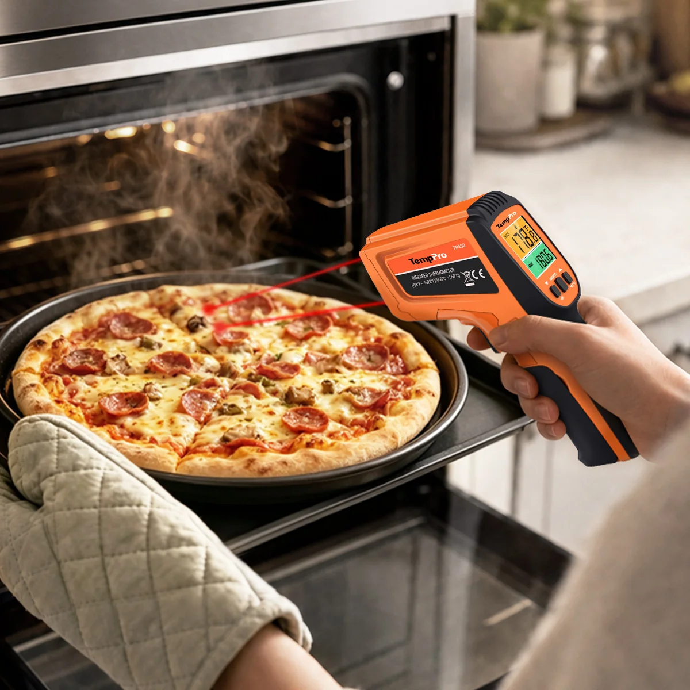
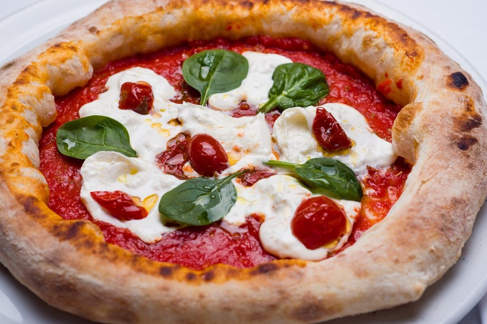

Para lograr una pizza espectacular en casa con calidad de restaurante, sigue estos consejos clave:
El secreto de una buena masa es la fermentación lenta. Deja reposar la masa en el refrigerador entre 24 y 48 horas; esto desarrolla mejor el sabor y genera burbujas de aire perfectas.
Los hornos de leña profesionales superan los 400 °C. En casa, precalienta tu horno a la máxima potencia posible (250 °C - 300 °C) durante al menos 30 minutos antes de hornear.
Utilizar una superficie refractaria ayuda a transferir el calor de forma directa a la base, logrando una masa crujiente por fuera y tierna por dentro.
El exceso de ingredientes (especialmente los que sueltan agua como los champiñones o el exceso de salsa) humedece la masa y evita que se cocine correctamente. Menos es más.

La pizza se ha adaptado a los gustos de diferentes regiones del mundo, dando lugar a estilos muy distintos:
Masa delgada, tierna y elástica con bordes altos y esponjosos (llamados cornicione), cocinada en apenas 90 segundos a fuego altísimo.
Porciones grandes y anchas con una masa delgada pero flexible que permite doblar la rebanada por la mitad para comerla en la calle.
Horneada en un molde hondo, parece un pastel. Tiene una base de masa gruesa y crujiente, invertida en su orden: una base gruesa de queso abajo, carnes en medio y la salsa de tomate arriba.
Pizza rectangular con una masa aireada similar a la focaccia, donde el queso se esparce hasta los bordes, creando una costra crujiente y caramelizada al hornearse.
